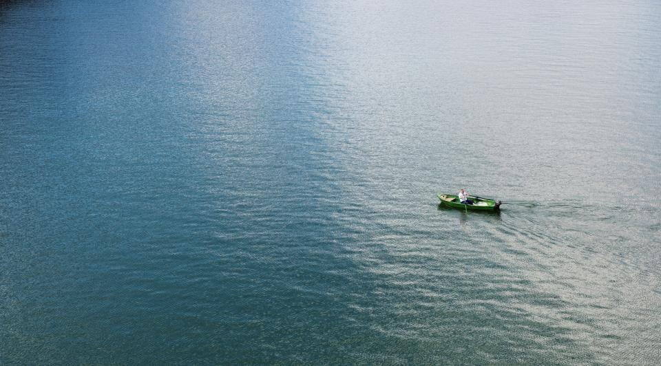
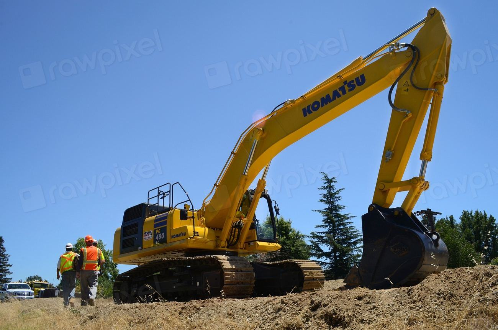

Båten, vagnen eller båda?
Uppdrag i Jämtland


Rena båtar mellan rena sjöar
Jämtlands fjällsjöar är bland de sista utan vandrarmussla och vattenpest. Vi tvättar varje båt och vagn som lämnar gården och informerar alla kunder om hur de rengör utrustningen själva.
- 100 %av förvaringsbåtarna tvättas före säsong
- 2 000tvättar på spolplattan sedan 2021
- 0kemikalier i tvättvattnet
Ladugård, mjölkrum och spolplatta

Vinterplatser under takLadugården
Tre loggångar i den gamla ladugården, med laddrum där kalvboxarna stod.

Vagnar och motorerMjölkrummet
Per-Erik och två mekaniker servar vagnar, svetsar och byter lager.
 Tvätt
TvättSpolplattan
Öppen för alla båtägare från maj till september, med kortbetalning.
Du backar in, vi tar över
- 01
Lämna båten på vagnen
Du backar in på gården. Vi tar över därifrån.
- 02
Kontroll av vagnen
Vi lyfter vagnen, snurrar hjulen och testar bromsar och lampor.
- 03
Åtgärder efter ditt ja
Du får ett sms med pris innan vi byter något som inte var beställt.
- 04
Hämta när isen gått
Kod till porten och båten står klar, vagnen smord och motorn provkörd.

Från lagård till trailerverkstad
- 140båtarUnder tak varje vinter
- 300vagnarServade per år
- 1938Året ladugården byggdes
- 5personerMalin, Per-Erik och tre till
Tar ni båtar som inte står på vagn?
Nej, ladugården är byggd för båtar som står kvar på sin vagn. Det gör att du kan hämta båten själv när du vill.
Hur stora båtar får plats?
Upp till 23 fot och 2,5 meter bredd, med en totalvikt för båt och vagn på högst 3,5 ton.
Vad kostar en vagnservice?
Grundservice från 1 650 kr. Lagerbyte från 1 200 kr per hjul inklusive delar.
Måste jag tvätta båten mellan sjöar?
Det är inte lag, men länsstyrelsen rekommenderar det starkt. Hos oss är tvätten gratis för förvaringskunder.
Kan jag hämta båten på helgen?
Ja, med din portkod kommer du in dygnet runt från 1 maj.
Servar ni bromsade vagnar för tung trafik?
Ja, vi kontrollerar och åtgärdar vagnar upp till 3,5 ton inför besiktning, men själva besiktningen görs av besiktningsföretaget.